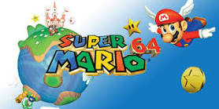

POPULAR GAMES
Super Mario 64 is a groundbreaking 3D platformer video game developed and published by Nintendo for the Nintendo 64 console. It was released in Japan on June 23, 1996, and later in North America, Europe, and Australia. Mario 64 is considered one of the most influential and iconic games of all time, as it revolutionized the platforming genre with its innovative gameplay and 3D graphics.